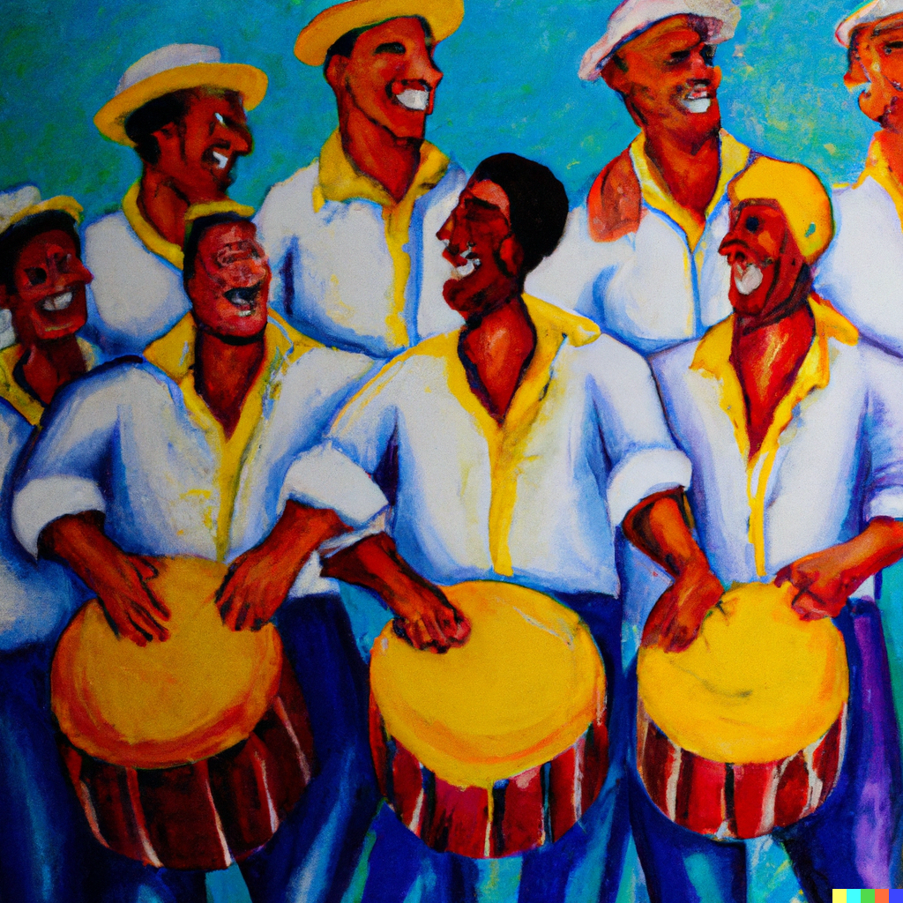
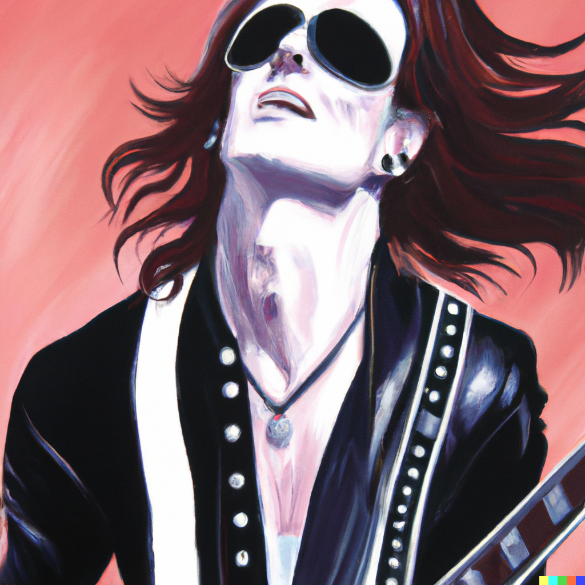
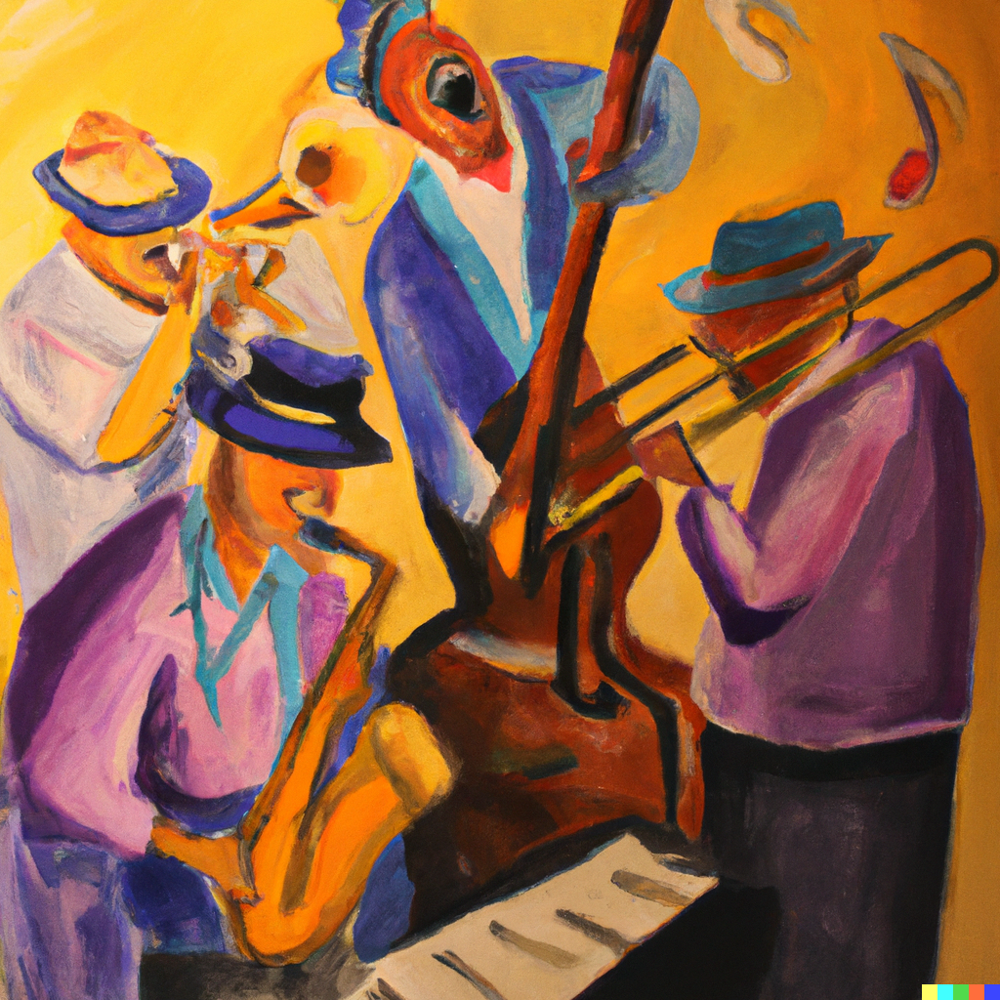
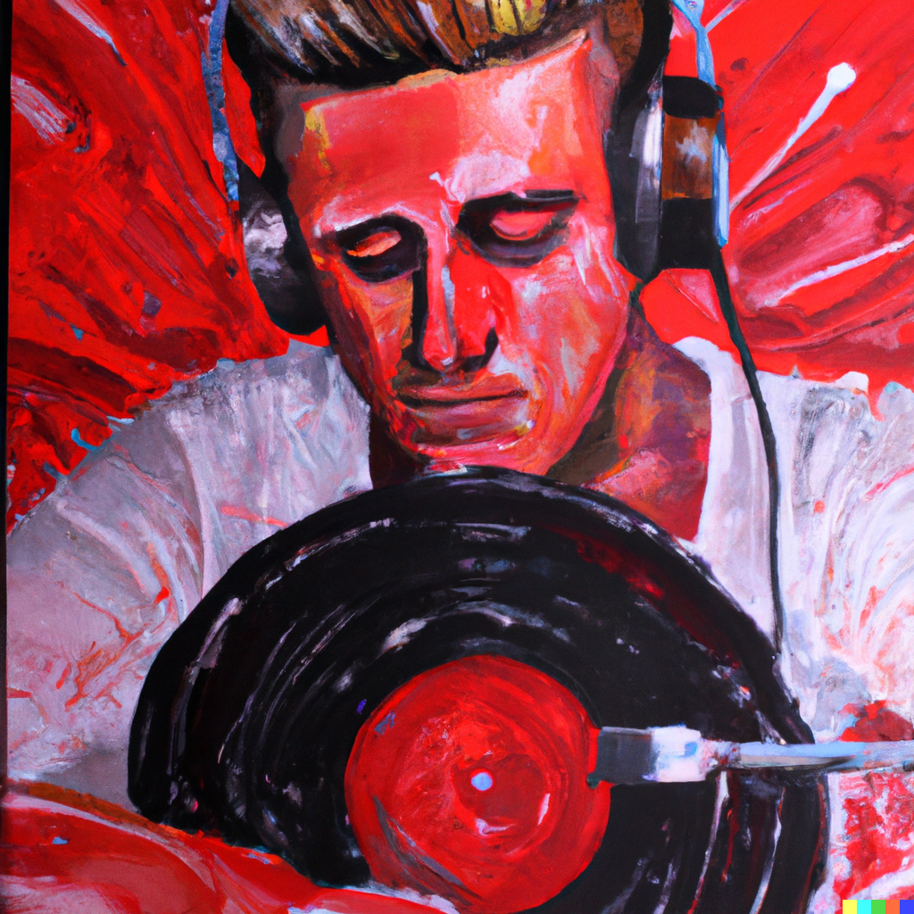

15 de Maio de 2023
SAMBA

O samba é um gênero musical brasileiro que tem suas raízes na cultura
afro-brasileira e se desenvolveu ao longo dos anos como uma expressão
artística e cultural marcante no país.
As origens do samba remontam aos tempos da escravidão no Brasil,
quando os africanos trazidos para o país trouxeram consigo suas
tradições musicais e ritmos. A mistura dessas influências africanas
com elementos da música indígena e europeia resultou no surgimento do
samba.
No início, o samba era associado principalmente às festividades
populares, como o Carnaval e as rodas de samba, onde as pessoas se
reuniam para dançar, cantar e tocar instrumentos percussivos como o
pandeiro, o tamborim e o surdo. As letras das músicas de samba
abordavam temas do cotidiano, amor, alegria e críticas sociais.
Durante o século XX, o samba se popularizou e se espalhou por todo o
Brasil, ganhando diferentes estilos e influências regionais. No Rio de
Janeiro, surgiram os primeiros sambistas profissionais e compositores
renomados, como Pixinguinha, Cartola e Noel Rosa, que contribuíram
para a consolidação do samba como um dos gêneros musicais mais
importantes do país.
Nos anos 1930 e 1940, o samba ganhou projeção nacional e começou a ser
gravado e difundido através das rádios e das primeiras gravações
fonográficas. A partir daí, surgiram grandes ícones do samba, como
Carmen Miranda, Ary Barroso e Dorival Caymmi, que levaram o ritmo
brasileiro para além das fronteiras do país.
Ao longo das décadas seguintes, o samba continuou a se reinventar e se
mesclar a outros gêneros musicais, como o jazz, a bossa nova e o rock.
Artistas como João Gilberto, Tom Jobim e Elis Regina trouxeram novas
sonoridades ao samba, expandindo ainda mais sua popularidade e
reconhecimento internacional.
Hoje, o samba permanece vivo e vibrante na cultura brasileira. É
celebrado e valorizado em diversas manifestações, como os desfiles de
escolas de samba no Carnaval, as rodas de samba nos bairros, os shows
e as gravações de álbuns de artistas contemporâneos. O samba é uma
parte essencial da identidade nacional brasileira e continua a
encantar e unir as pessoas através de sua música e energia
contagiante.
Referências:
Dunn, C. (2001). Samba: Resistance in Motion. Indiana University
Press.
Vianna, H. (1999). The Mystery of Samba: Popular Music and National
Identity in Brazil. University of North Carolina Press.
McGowan, C., & Pessanha, R. (1998). The Brazilian Sound: Samba, Bossa
Nova, and the Popular Music of Brazil. Temple University Press.
Almeida, H., & Campbell, P. (2012). Samba and Social Identity in
Brazil. Indiana University Press.
Shaw, L. (2014). Samba on a Guiro: History of Samba Music. CreateSpace
Independent Publishing Platform.
Behague, G. (2001). Samba on a Guiro: History of Samba Music. Grove
Music Online.
16 de Maio de 2023
ROCK AND ROLL

O rock and roll é um gênero musical que surgiu nos Estados Unidos no
final da década de 1940 e início da década de 1950. Ele é resultado de
uma mistura de estilos musicais como o rhythm and blues, country,
gospel e o blues.
O termo "rock and roll" foi popularizado pelo DJ Alan Freed, que usava
essa expressão para descrever a nova música que estava ganhando
destaque na época. O som do rock and roll era marcado por ritmos
enérgicos, guitarras elétricas distorcidas e letras que falavam sobre
liberdade, amor, rebeldia e juventude.
Os pioneiros do rock and roll, como Chuck Berry, Elvis Presley, Little
Richard e Jerry Lee Lewis, trouxeram uma nova energia para a música
popular da época. Eles foram responsáveis por criar um estilo de
performance eletrizante no palco, com movimentos provocativos e uma
atitude rebelde.
O rock and roll se tornou um fenômeno global nos anos 50 e 60,
influenciando profundamente a cultura jovem e provocando mudanças
sociais. Foi uma música que rompeu barreiras raciais, pois tanto
artistas negros quanto brancos contribuíram para o seu desenvolvimento
e popularização.
Ao longo das décadas, o rock and roll se diversificou em diversos
subgêneros, como o rockabilly, o rock psicodélico, o punk rock, o
heavy metal e muitos outros. Cada um desses estilos trouxe novas
sonoridades e temáticas, refletindo as transformações sociais e
culturais de cada época.
Até os dias de hoje, o rock and roll continua sendo uma das formas
mais populares de expressão musical, com bandas e artistas talentosos
mantendo viva a essência e a paixão do gênero. Sua história é uma
prova do poder da música em conectar pessoas, transmitir mensagens e
criar um impacto duradouro na sociedade.
Referências:
Palmer, R. (1992). Rock & Roll: An Unruly History. Harmony Books.
Szatmary, D. P. (2014). Rockin' in Time: A Social History of
Rock-and-Roll. Pearson.
Ward, T. (2014). Rock and Roll: An Introduction. Oxford University
Press.
Unterberger, R. (2006). Turn! Turn! Turn!: The '60s Folk-Rock
Revolution. Backbeat Books.
Thompson, D. (2000). The Music Lover's Guide to Record Collecting.
Backbeat Books.
Garofalo, R. (1997). Rockin' Out: Popular Music in the USA. Prentice
Hall.
17 de Maio de 2023
JAZZ

O jazz é um gênero musical que nasceu nos Estados Unidos no final do
século XIX e início do século XX. Sua história está intimamente ligada
à cultura afro-americana e ao contexto social da época.
O jazz teve suas raízes no blues, nos espirituais negros e nas
tradições musicais africanas trazidas pelos escravos. A mistura dessas
influências resultou em um estilo musical único, marcado pela
improvisação, ritmos sincopados e harmonias complexas.
O berço do jazz foi a cidade de Nova Orleans, onde músicos de
diferentes origens se reuniam em festas, funerais e clubes para tocar
suas músicas. Foi lá que os primeiros estilos do jazz, como o
Dixieland e o ragtime, começaram a se desenvolver.
Com o passar do tempo, o jazz se espalhou para outras partes dos
Estados Unidos, especialmente para cidades como Chicago e Nova York.
Grandes nomes como Louis Armstrong, Duke Ellington e Charlie Parker
surgiram nessa época, contribuindo para a evolução e popularização do
gênero.
Na década de 1920, o jazz ganhou destaque na cultura popular e se
tornou uma forma de entretenimento popular. Bandas de jazz e
orquestras se apresentavam em teatros, clubes e rádios, proporcionando
momentos de alegria e diversão para as pessoas.
Durante a era do swing, nas décadas de 1930 e 1940, o jazz alcançou um
enorme sucesso e influência cultural. Grandes big bands, como a de
Count Basie e Benny Goodman, conquistaram o público com suas
performances energéticas e dançantes.
Ao longo das décadas seguintes, o jazz passou por diferentes
transformações e incorporou elementos de outros gêneros musicais, como
o bebop, o cool jazz, o fusion e o free jazz. Cada um desses estilos
trouxe novas ideias e abordagens, mantendo o jazz como uma forma de
expressão artística em constante evolução.
Hoje, o jazz continua a ser apreciado e tocado em todo o mundo. Seus
ritmos cativantes, improvisações emocionantes e a habilidade técnica
dos músicos continuam a encantar e inspirar pessoas de todas as
idades. O jazz é um testemunho da criatividade humana e da capacidade
da música de transcender barreiras e unir as pessoas.
Referências:
Gioia, T. (2011). História do Jazz. Editora UNESP.
Ward, G. (2005). Jazz: A History of America's Music. Vintage.
Giddins, G., & DeVeaux, S. (2009). Jazz. WW Norton & Company.
Kirchner, B. (2005). The Oxford Companion to Jazz. Oxford University
Press.
Schuller, G. (1989). The Swing Era: The Development of Jazz,
1930-1945. Oxford University Press.
Tucker, M. (2019). Duke Ellington's America. University of Chicago
Press.
2Berendt, J. E., & Huesmann, G. (2009). The Jazz Book: From Ragtime to
the 21st Century. Lawrence Hill Books.
18 de Maio de 2023
ELETRONICA

A música eletrônica é um gênero musical que surgiu no século XX,
impulsionado pelo desenvolvimento da tecnologia e dos instrumentos
musicais eletrônicos. Sua história é marcada pela experimentação
sonora e pela utilização de sons sintetizados.
O marco inicial da música eletrônica remonta aos anos 1920, quando o
compositor russo Leon Theremin inventou o primeiro instrumento
eletrônico, conhecido como Theremin. Esse instrumento permitia aos
músicos produzir sons sem o uso de contato físico, controlando o tom e
o volume por meio de movimentos das mãos.
Nos anos 1950 e 1960, surgiram os primeiros estúdios de música
eletrônica, como o Studio for Electronic Music, em Colônia, Alemanha,
e o Columbia-Princeton Electronic Music Center, nos Estados Unidos.
Nesses estúdios, os músicos experimentaram novas técnicas de gravação
e manipulação sonora, utilizando geradores de som, fitas magnéticas e
sintetizadores analógicos.
Na década de 1970, a música eletrônica começou a ganhar popularidade
com o surgimento do movimento disco. Os DJs usavam técnicas de mixagem
e manipulação de faixas para criar um ambiente dançante e cativante
nas pistas de dança.
Nos anos 1980, o avanço da tecnologia digital possibilitou a criação
de novos sons e timbres, impulsionando o desenvolvimento de gêneros
como a música eletrônica ambient, o synthpop e a música eletrônica
experimental. Artistas como Kraftwerk, Jean-Michel Jarre e Brian Eno
foram pioneiros na exploração desses novos horizontes musicais.
A década de 1990 foi um marco na história da música eletrônica com o
surgimento da música eletrônica de pista, conhecida como música
eletrônica de dança ou EDM (Electronic Dance Music). Gêneros como o
techno, house, trance e drum and bass ganharam popularidade nas festas
e clubes noturnos ao redor do mundo.
Desde então, a música eletrônica tem continuado a se diversificar e
evoluir, incorporando influências de diversos estilos musicais e
explorando novas fronteiras sonoras. A tecnologia digital, os
softwares de produção musical e os controladores MIDI se tornaram
ferramentas essenciais para a criação e performance de música
eletrônica.
Atualmente, a música eletrônica está presente em diversos gêneros e
subgêneros musicais, e artistas como Daft Punk, Calvin Harris e Avicii
alcançaram sucesso mundial com suas produções eletrônicas. A música
eletrônica continua a ser uma forma de expressão artística que promove
a criatividade, a experimentação e a conexão com o público em um
ambiente sonoro único e envolvente.
Referências:
Pinch, T., & Bijsterveld, K. (2012). The Oxford Handbook of Sound
Studies. Oxford University Press.
Butler, M., & Peters, B. (2006). Electronic and Experimental Music:
Technology, Music, and Culture. Taylor & Francis.
Holmes, T. (2008). Electronic and Experimental Music: Technology,
Music, and Culture. Routledge.
Prendergast, M. (2000). The Ambient Century: From Mahler to Moby - The
Evolution of Sound in the Electronic Age. Bloomsbury Publishing.
Collins, N. (2010). Handmade Electronic Music: The Art of Hardware
Hacking. Routledge.
Toop, D. (2005). Ocean of Sound: Aether Talk, Ambient Sound and
Imaginary Worlds. Serpent's Tail.